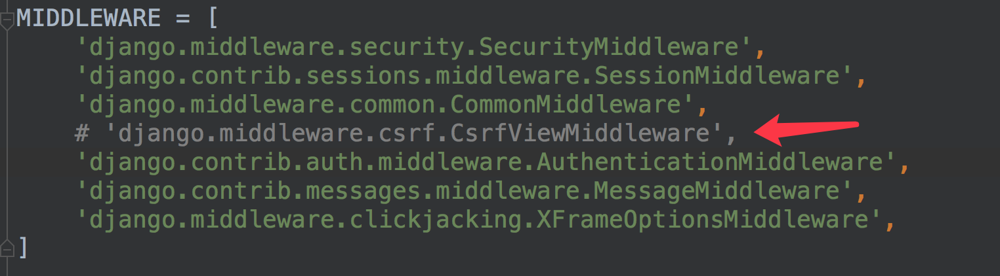

请求
回想一下，利用HTTP协议向服务器传参有几种途径？
- 提取URL的特定部分，如/weather/beijing/2018，可以在服务器端的路由中用正则表达式截取；
- 查询字符串（query string)，形如key1=value1&key2=value2；
- 请求体（body）中发送的数据，比如表单数据、json、xml；
- 在http报文的头（header）中。
1 URL路径参数
在定义路由URL时，可以使用正则表达式提取参数的方法从URL中获取请求参数，Django会将提取的参数直接传递到视图的传入参数中。
未命名参数按定义顺序传递， 如
url(r'^weather/([a-z]+)/(\d{4})/$', views.weather), def weather(request, city, year): print('city=%s' % city) print('year=%s' % year) return HttpResponse('OK')命名参数按名字传递，如
url(r'^weather/(?P<city>[a-z]+)/(?P<year>\d{4})/$', views.weather), def weather(request, year, city): print('city=%s' % city) print('year=%s' % year) return HttpResponse('OK')
2 Django中的QueryDict对象
定义在django.http.QueryDict
HttpRequest对象的属性GET、POST都是QueryDict类型的对象
与python字典不同，QueryDict类型的对象用来处理同一个键带有多个值的情况
方法get()：根据键获取值
如果一个键同时拥有多个值将获取最后一个值
如果键不存在则返回None值，可以设置默认值进行后续处理
dict.get('键',默认值) 可简写为 dict['键']方法getlist()：根据键获取值，值以列表返回，可以获取指定键的所有值
如果键不存在则返回空列表[]，可以设置默认值进行后续处理
dict.getlist('键',默认值)
3. 查询字符串Query String
获取请求路径中的查询字符串参数（形如?k1=v1&k2=v2），可以通过request.GET属性获取，返回QueryDict对象。
# /qs/?a=1&b=2&a=3
def qs(request):
a = request.GET.get('a')
b = request.GET.get('b')
alist = request.GET.getlist('a')
print(a) # 3
print(b) # 2
print(alist) # ['1', '3']
return HttpResponse('OK')
重要：查询字符串不区分请求方式，即假使客户端进行POST方式的请求，依然可以通过request.GET获取请求中的查询字符串数据。
4 请求体
请求体数据格式不固定，可以是表单类型字符串，可以是JSON字符串，可以是XML字符串，应区别对待。
可以发送请求体数据的请求方式有POST、PUT、PATCH、DELETE。
Django默认开启了CSRF防护，会对上述请求方式进行CSRF防护验证，在测试时可以关闭CSRF防护机制，方法为在settings.py文件中注释掉CSRF中间件，如：

4.1 表单类型 Form Data
前端发送的表单类型的请求体数据，可以通过request.POST属性获取，返回QueryDict对象。
def get_body(request):
a = request.POST.get('a')
b = request.POST.get('b')
alist = request.POST.getlist('a')
print(a)
print(b)
print(alist)
return HttpResponse('OK')
重要：request.POST只能用来获取POST方式的请求体表单数据。
4.2 非表单类型 Non-Form Data
非表单类型的请求体数据，Django无法自动解析，可以通过request.body属性获取最原始的请求体数据，自己按照请求体格式（JSON、XML等）进行解析。request.body返回bytes类型。
例如要获取请求体中的如下JSON数据
{"a": 1, "b": 2}
可以进行如下方法操作：
import json
def get_body_json(request):
json_str = request.body
json_str = json_str.decode() # python3.6 无需执行此步
req_data = json.loads(json_str)
print(req_data['a'])
print(req_data['b'])
return HttpResponse('OK')
5 请求头
可以通过request.META属性获取请求头headers中的数据，request.META为字典类型。
常见的请求头如：
CONTENT_LENGTH– The length of the request body (as a string).CONTENT_TYPE– The MIME type of the request body.HTTP_ACCEPT– Acceptable content types for the response.HTTP_ACCEPT_ENCODING– Acceptable encodings for the response.HTTP_ACCEPT_LANGUAGE– Acceptable languages for the response.HTTP_HOST– The HTTP Host header sent by the client.HTTP_REFERER– The referring page, if any.HTTP_USER_AGENT– The client’s user-agent string.QUERY_STRING– The query string, as a single (unparsed) string.REMOTE_ADDR– The IP address of the client.REMOTE_HOST– The hostname of the client.REMOTE_USER– The user authenticated by the Web server, if any.REQUEST_METHOD– A string such as"GET"or"POST".SERVER_NAME– The hostname of the server.SERVER_PORT– The port of the server (as a string).
具体使用如:
def get_headers(request):
print(request.META['CONTENT_TYPE'])
return HttpResponse('OK')
6 其他常用HttpRequest对象属性
- method：一个字符串，表示请求使用的HTTP方法，常用值包括：'GET'、'POST'。
- user：请求的用户对象。
- path：一个字符串，表示请求的页面的完整路径，不包含域名和参数部分。
- encoding：一个字符串，表示提交的数据的编码方式。
- 如果为None则表示使用浏览器的默认设置，一般为utf-8。
- 这个属性是可写的，可以通过修改它来修改访问表单数据使用的编码，接下来对属性的任何访问将使用新的encoding值。
- FILES：一个类似于字典的对象，包含所有的上传文件。